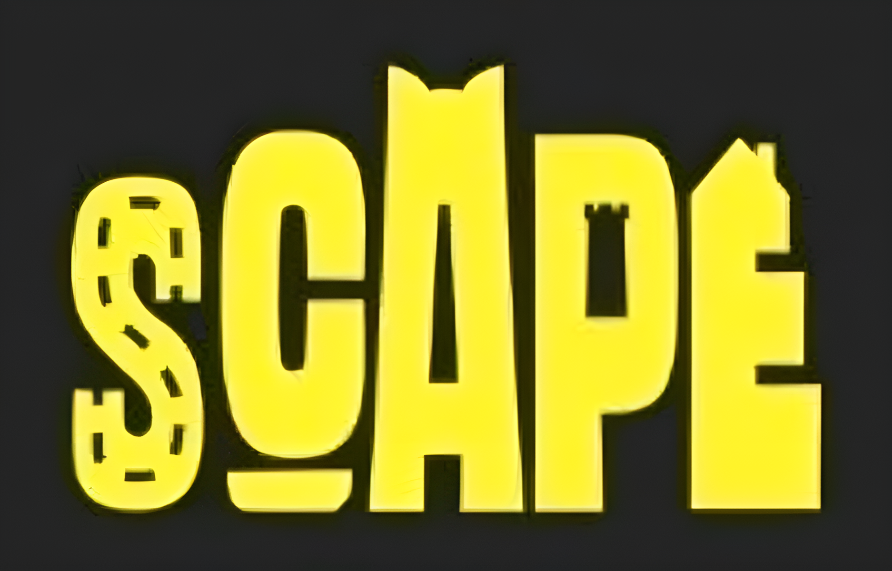

Scape [2024-2025]
Contributed to the UI development of an MMO game at Ringtail Interactive by translating Figma designs into Unity using UI Toolkit. Developed custom UI controls to enhance functionality and followed the MVVM architectural pattern.
Sector 77: La Resistencia [2023]
Application developed for Mind Trips. It is a continuation of Sector 77 with additional features. Furthermore, it also has Augmented Reality using Vuforia Engine.

Sector 77 [2023]
During my internship at Mind Trips I developed a complementary mobile app for an escape room. This app features Augmented Reality using Vuforia Engine.

Desktop UI [2024]
The Desktop UI prototype emulates the functionality of a desktop, facilitating the management and creation of new applications through the utilization of ScriptableObjects. This UI adapts seamlessly to various resolutions. Furthermore, the settings window implements the MVP pattern to effectively separate concerns.

Time-Tick Cemetery [2023]
Born during a gamejam, this project has undergone significant development. It features code refactoring, the addition of mobile control functionality, support for keyboard and controller inputs, along with data-saving, and an improved visual style.